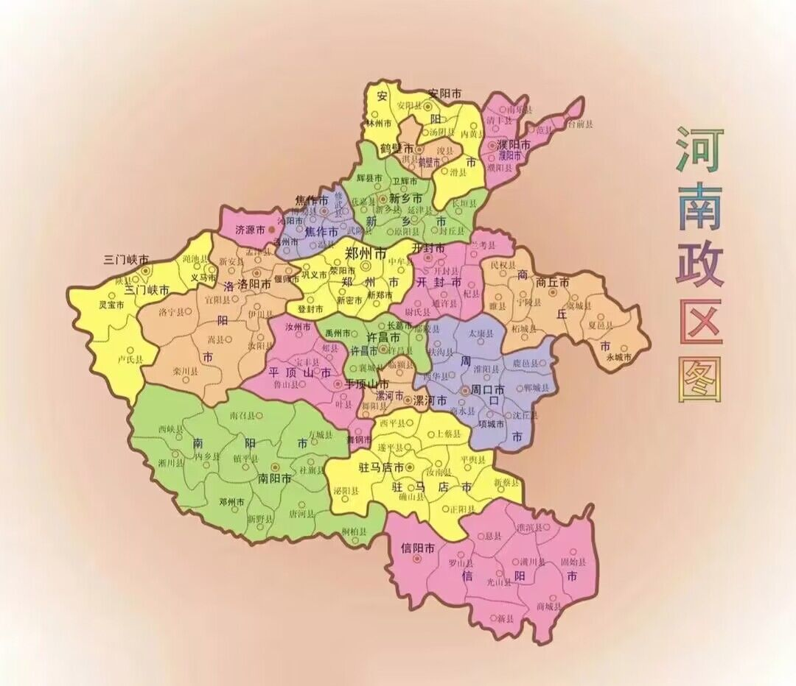

历史沿革
远古时期
1978年9月发掘的南召猿人说明50万年前就有人类在河南生息和繁衍。
2007年发掘代表旧石器时代的“许昌人”说明距今8万～10万年的河南古人已经很好的利用石器，并在国内首次发现了1.5万年前先人们制作服装用的牙制纽扣、针和染色用的赭石(颜料)等服饰文物。
1980年，在河南杏花山附近发掘出约1-3万年前旧石器晚期猿人用火和管理火的洞穴遗址。
商周时期
商朝发源于河南商丘，其首都亳（今商丘）、西亳（今偃师）、殷（今安阳）和朝歌均在河南境内，其中殷是中国历史上第一个有文献可考、并为考古学和甲骨文所证实的都城，是中国历史上可以肯定确切位置的最早的都城。
西周营建东都成周洛阳，东周建都洛阳，众多诸侯国的都城也均在河南境内。
秦汉时期
秦王朝建立后，在今河南境内设置三川郡（治雒阳，今洛阳）、砀郡（治睢阳县，今商丘睢阳区）、陈郡（治陈县，今淮阳县）、南阳郡（治宛县，今南阳宛城区）、颍川郡（治阳翟县，今禹州）、河内郡（治野王县，今沁阳）、东郡（治濮阳县，今濮阳西南）等。
西汉在河南设豫州刺史部，辖颍川郡、汝南郡、沛郡，以及梁国（都睢阳）。 东汉王朝建都洛阳，河南成为东汉全国的政治、经济、文化中心。
魏晋南北朝
东汉之后形成三国鼎立局面，河南属魏国，曹操起兵崛起于战国时期的魏国旧地陈留（今开封），故国号为“魏”，魏国先后设立首都许昌、洛阳，西晋建立后继续建都洛阳。
公元439年，北魏统一了北方，孝文帝将首都迁至洛阳。这一时期的后赵、冉魏、前燕、东魏、北齐都建都于邺城（今安阳）。
隋唐五代
隋朝时期在河南设立河南郡、荥阳郡、梁郡、淮阳郡、襄城郡、颍川郡、汝南郡、汝阴郡、弘农郡、淅阳郡、南阳郡、淮安郡等州郡，以洛阳为东都。隋末，隋炀帝迁都洛阳，又以洛阳为中心开凿了沟通南北的大运河。
唐朝设立河南道，仍以洛阳为东都（陪都）。武周建都洛阳，称神都。
隋唐五代五代的后梁、后晋、后汉与后周均建都开封，后唐定都洛阳。
宋元时期
北宋在河南设立开封府、京东西路、京西南路、京西北路，以开封为东京、以洛阳为西京、以商丘为南京。河南又一次成为全国的政治、经济和文化中心。
北宋时，开封人口达100多万，为全国第一大城市，商业贸易额占全国之半，各方面都极一时之盛，可以说是古代河南历史的黄金时代。从唐朝建立到北宋覆亡，河南的经济和文化达到鼎盛时期。金灭北宋之后，赵构在南京应天府（今商丘）登基称帝，建立南宋。南宋以后，是河南社会历史发展的中衰时期。
元朝实行的行省制，河南属于河南江北行省，开封是治所。
明清时期
1368年，明朝建立，河南省下设8个府1个直隶州：开封府、河南府（洛阳）、归德府（商丘）、南阳府、汝宁府（汝南）、卫辉府、彰德府（安阳）和怀庆府（沁阳）和汝州直隶州（汝州），在开封驻有周王。
清朝基本沿袭了明朝行政区划。
民国时期
北洋军阀时期，洛阳曾是吴佩孚的基地。1926年，冯玉祥参加北伐战争，进驻河南。1932年，上海一二八事变后，南京国民政府一度迁都洛阳。1928年－1932年期间，共产党的张国焘、徐向前等人在大别山区开辟武装割据的鄂豫皖革命根据地，新集（今新县）是鄂豫皖根据地的首府。
共和国时期
1949年1月10日，淮海战役胜利结束，河南全境解放。
1949年8月，黄河以北地区成立平原省，省会驻新乡市，河南省保留黄河以南地区。
1952年11月15日，撤销平原省，其行政区域大部分并入河南省，河南省行政区域基本保持至今。
1954年10月，河南省会驻地从开封市迁至郑州市。
2016年12月26日，国务院发布《促进中部地区崛起“十三五”规划》，《规划》正式批复郑州入选国家中心城市，继续做大做强洛阳、南阳、商丘、安阳等国家区域中心城市，壮大中原城市群，形成支撑中部崛起的核心增长地带。
